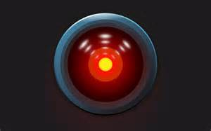
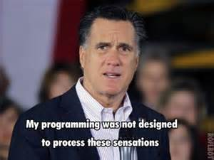

Digital Humanities
Whatever it is, it's cool!
A guest lecture by Scott Kleinman / scott.kleinman@csun.edu
Digital + Humanities = Computers + ???
What exactly are the Humanities?
Defition of the Humanities
“The humanities”: humpty-dumptiest of terms. Some days it means “lit crit,” other days “everything that isn’t (a caricature of) science”…
—Andrew Goldstone (tweeted yesterday)
Traditional Humanities Disciplines
Modern interdisciplinary fields draw on these disciplines but may also draw on the social and behavioural sciences.
Literature
Originally focused on the language of written texts, now focused mostly on their aesthetic qualities or cultural roles with a strong emphasis on rhetorical persuasion.
History
Study of past events and ideas with a stronger evidentiary emphasis than literature.
Modern and Classical Languages
Typically a combination of literary and historical studies with a focus on languages other than English.
Philosophy
Exploration of the ideological framework with which we understand the world from a formal, logical perspective.
Experiments in Defining
Digital Humanities
A Working Definition
DH involves the use of computers for the collection, preservation, dissemination, understanding, appreciation, and criticism of objects and ideas in human cultures. DH involves a substantial critical interest in the methods for and implications of using computers in this way.
Platforms for Collecting and Disseminating Digital Objects
Collection
Social media platforms (Facebook, Twitter, Tumblr, etc.) allow the simultaneous creation and collection of digital objects. Aggregators can pull content from multiple platforms. Commitment to preservation varies by platform.
Remediation
Libraries often collect digital content by remediating physical objects into digital form. Example: the British Library's Digitised Manuscripts archive
Portals
Digital platforms for accessing cultural objects.
Hack v. Yack
Is DH about building digitial tools and resources or about using them in arguments?
Building
- Project-Based
- Collaborative
- Interdisciplinary
- Non-Hierarchical
Components of Remediation
- Digital Imaging
Example: Robert Cawdrey, A Table Alphabeticall (1609) from Early English Books Online - Assignment of metadata
- Transcription or Optical Character Recognition
Example 1: Frankenstein on Project Gutenberg
Example 2: EEBO Search Tool and Source Files - Digital Markup Example: Samuel Rowley, When you see me, you know me (1605) — from the Text Creation Partnership
The Place of Scholarly Intervention
A passage from the Bodleian Library's First Folio edition of William Shakespeare's The Tempest:
More Extensive Scholarly Markup
Example: Draft Notebook A of Frankenstein (from the Shelley-Godwin Archive)
Crowdsourcing

Digital Humanities Data
- Metadata
- Texts (raw text and markup)
- (Increasingly) non-text formats
Treating humanities resources as data allows us to study them using quantitative and algorithmic methods, and to do so at scale.
Distant Reading
Macroanalysis
Matthew Jockers, 500 Themes from a Corpus of Nineteenth-Century Fiction
Digital editing is about collaborating with computers.
But what do we get when we collaborate with computers?


Digital Humanities Is a Discussion
about Digital Methods of
Analysis and Communication
Methods can be applied to born-digital materials as well as remediated materials. Example: Ben Schmidt, Gendered Language on ratemyfrofessor.com.*
Why Should You Do Digital Humanities?
- It's a chance to cross disciplinary boundaries.
- In the job market, combining Humanities understanding of people and cultures, communication skills, and technical know how is a ticket to success.
- You can work to build a portfolio, not just work on assignments for a grade.
- You learn collaboration and project management.
Digital Humanities is empowering!
Digital Humanities Projects at CSUN
The Archive of Early Middle English
(Digital Editing)

Contact: Scott Kleinman, English
18thConnect
(Crowdsourced Transcription)

Contact:
Danielle Spratt, English
Lexomics
(Computational Text Analysis)
Contact: Scott Kleinman, English
4Humanities@CSUN
(Advocacy)
Contact: Lily Thiemens
THE END
Made with Reveal.js